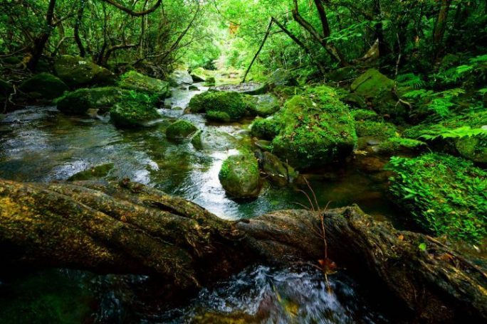
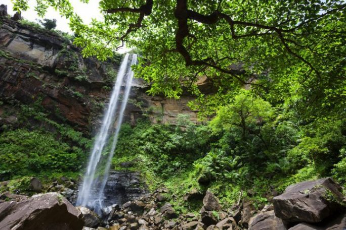
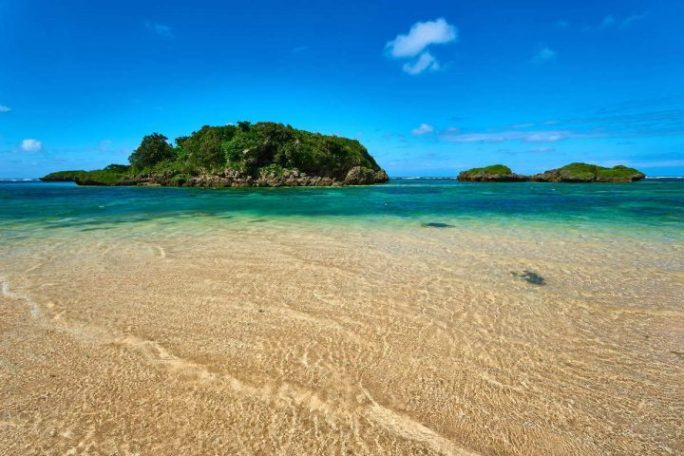
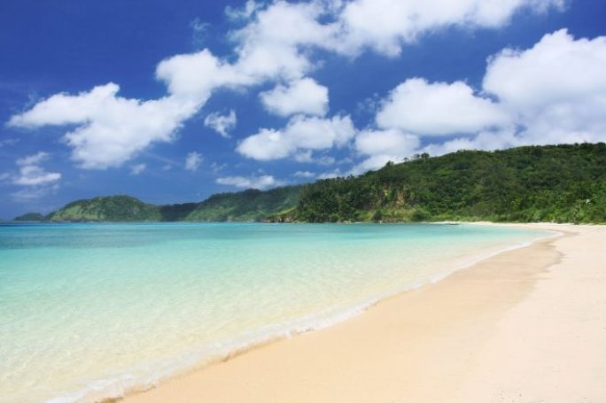
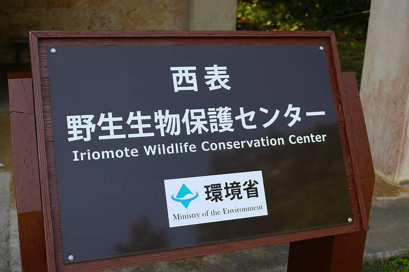
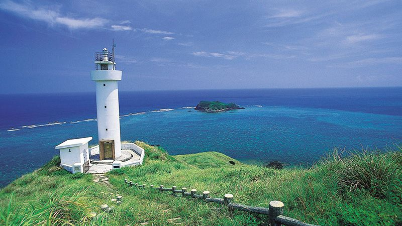
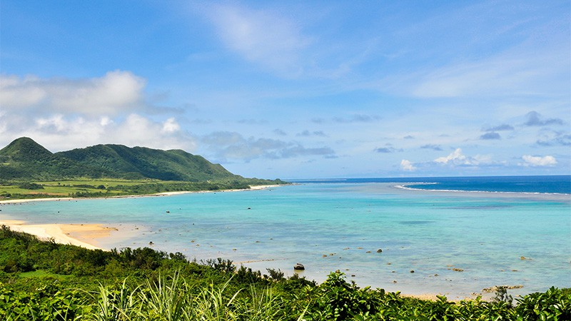

SightSeeing
西表島のおすすめ！観光スポット
ユツン川＆ユツン三段の滝

西表島でもダントツの美しさを誇る「ユツンの滝」。
ユツン川上流にあるその滝を見るためには、ジャングルの中をトレッキングしたり、ユツン川をカヌーで進みます。
ユツン川に沿って広がる色濃い自然は、日々の疲れを忘れさせてくれる美しさ。周辺では亜熱帯ならではのユニークな動植物にも出会えますよ。
ピナイサーラの滝

ピナイとは方言で「ヒゲ」、サーラは「下がったもの」という意味。
「ピナイサーラ」とは、老人のヒゲのように白く下がった滝を表しています。
55mもの落差は沖縄県最大。カヌーで中流まで行き、途中からトレッキングで滝を目指すのが一般的な行き方。
がんばって滝上まで登んだ人だけが望める、エメラルドグリーンの海と鳩間島、バラス島は筆舌に尽くし難い美しさです。
星砂の浜

星の形をした砂があることから「星砂の浜」と呼ばれているこちらのビーチ。
実はこの星砂、有孔虫の骨格が砂浜にうちあげられたものだとか。とはいえ、愛らしい星砂で埋め尽くされた海岸は、ぜひ歩いてみたいもの。
また、星砂の浜から続く海は浅瀬で波もおだやかなので、すぐそこにきれいな魚を見ることができます。海水浴やシュノーケリングを楽しみたい人にも人気のビーチです。
イダの浜

「イダの浜」は、船に乗らなければたどり着けない極上ビーチ。
陸路がないため、白浜港から定期船に乗る必要がありますが、海の透明感と美しさは西表島の中でもダントツ！
遠浅の海なので子供連れでも安心して遊べるのもポイント。シュノーケリング体験にもぴったりです。
西表野生生物保護センター

「西表野生生物保護センター」は、イリオモテヤマネコの保護活動の拠点として整備された環境省の施設。
イリオモテヤマネコをはじめとする西表島に生息する希少動物の剥製が展示されています。
西表島の自然について学び、島の野生生物や自然環境保全への理解・関心を深めてみませんか。
もしヤマネコを見かけたら保護センターに連絡を！ (0980-85-5581)
西表島の野生動物保護にも協力しましょう！
石垣島のおすすめ！観光スポット
川平湾
石垣島で一番の景勝地とされる「川平湾（かびらわん）」。新石垣空港から車で約40分、市街地から車で約35分の場所にあります。
青から緑に変化する美しいグラデーションが見られる海と、その周辺に点在する緑豊かな島々の光景は、絶景そのもの！日本百景にも選ばれています。
あまりの美しさについつい泳ぎたくなってしまいますが、残念ながら湾内は流れが強く危険なので遊泳禁止です。
泳ぐことはできませんが、船底がガラス張りの「グラスボート」に乗ってカラフルなトロピカルフィッシュや珊瑚礁を観察したり、川平湾の「無人島上陸ツアー」で探検気分を味わったり、無人島周辺でカヤック・シュノーケリングができるツアーを楽しめます。
また川平湾は水質が大変良く、黒真珠（ブラックパール）の一種「黒蝶真珠」の養殖地としても知られています。さまざまな魅力ある川平湾は、海外メディアでも取り上げられており、必ず訪れたい石垣島定番の観光スポットです。
白保海岸
世界に誇れるアオサンゴの大群生地「白保海岸（しらほかいがん）」。新石垣空港から車で約10分、市街地から車で約25分の場所にあります。
沖合1kmほどの場所に、世界最大規模のサンゴ礁が広がり、また世界的に貴重価値のある「アオサンゴ」の大群生地としても注目を浴びています。
陸から少し遠いため、シュノーケリングツアーへの参加が特におすすめ！
また白保海岸では、南米ボリビアのウユニ塩湖で見られるような水鏡の現象が起きることがあります。
もし風の無い晴れた日に、白保海岸を訪れることができたらチャンス！空と海の境界線が消えてひとつになる瞬間、神秘的な世界が広がります。
米原ビーチ
シュノーケリングスポットとして人気の「米原ビーチ（よねはらびーち）」。新石垣空港から車で約25分、市街地から車で約35分の場所にあります。
浜から目の前のサンゴ礁まではたったの数メートル、カラフルなトロピカルフィッシュや珊瑚礁を思う存分観察でき、気軽にシュノーケリングを楽しめちゃいます。
ただし、沖に出ると潮の流れが速いため、ご注意を！シュノーケリングを楽しむ前に、駐車場などにある潮の流れの案内を確認しておきましょう。
また隣接している「米原キャンプ場」は年間を通して利用客が多く、BBQも楽しめます。観光客だけでなく、地元の人達にも人気があるビーチです。
石垣島サンセットビーチ
干潮時にも泳ぐことができて子連れにも安心の「石垣島サンセットビーチ」。新石垣空港から車で約35分、市街地から車で約50分の場所にあります。
以前は久宇良海岸と呼ばれていましたが10年ほど前に整備され「石垣島サンセットビーチ」となりました。
石垣島で唯一の有料ビーチですが、監視員常駐・クラゲ防止ネット設置など、子供連れでも安心して遊べます。
また透明度が高く青い海・白い砂浜・綺麗な夕日が見られるというだけでなく、干潮時にも泳ぐことができるのは嬉しいですね！
シュノーケリング・スタンドアップパドルボード・バナナボート・ウェイクボードなどのマリンスポーツが充実、プライベート感も楽しめる穴場的ビーチです。
フサキビーチ
桟橋から見えるサンセットが美しい「フサキビーチ」。新石垣空港から車で約30分、市街地から車で約15分の場所にあります。
フサキリゾートヴィレッジ内にあるビーチですが、宿泊客以外でなくても無料で気軽に利用できます。
向かいには西表島が見え、静かで綺麗・波は穏やかで、ウミガメも産卵に訪れると言われている天然のロングビーチです。
オンシーズンはクラゲ防止ネットや監視員も常駐、子供連れでも安心して遊べます。
フサキビーチからは、桟橋から見える青い空と海や桟橋から見える雄大な夕日が、絵になるほどの絶景ぶり。また夜には満天の星空を観測することも！
またフサキリゾートヴィレッジでは星空ガイド付きのツアーも開催しており、12月～6月は本州では見られない「南十字星」を見ることもできます（ベストシーズンは5月～6月）。
アクティビティも豊富で、シュノーケリング・フライボード・ドラゴンボート・ウェイクボード・シーカヤック・クリアカヤック・スタンドアップパドルボード・マリンジェットなど充実のラインナップとなっています！
真栄里ビーチ
とても綺麗・のんびり過ごすには最適の「真栄里ビーチ（マエサトビーチ）」。新石垣空港から車で約20分、市街地から車で約10分の場所にあります。
ANAインターコンチネンタル石垣リゾート内にあるビーチですが、宿泊客でなくても無料で気軽に利用できます。
とても綺麗に保たれているビーチで、各設備を完備、のんびりとゆっくり過ごすにはもってこい！空港から近いためフライトまでの時間をここで過ごすのもおすすめです。
オンシーズンは安全ネットや監視員も常駐、子供連れでも安心して遊べます。アクティビティは、シーカヤックやシュノーケリング・ペダルボートなどが体験できます。
底地ビーチ
水が綺麗で小魚がたくさん！の「底地ビーチ（すくじびーち）」。新石垣空港から車で約40分、市街地から車で約30分の場所にあります。
川平湾から2kmと近いため、川平湾に行くときには是非合わせて立ち寄ってほしいビーチです。
1kmも続く遠浅のロングビーチが特徴的で、エメラルドグリーンの海、波は穏やか、水がとても綺麗で小魚が多く見られるため、小さなお子さんでも十分に楽しめます。
夏の一定期間には安全ネットを設置、各施設も完備されています。またビーチ沿いには木が生い茂っているため、涼しい日陰でゆったりのんびり過ごしてみてもいいですね～！
平久保崎

石垣島最北端に灯台がある「平久保崎（ひらくぼさき）」。新石垣空港から車で約40分、市街地から車で約60分の場所にあります。
灯台の目の前の海は、珊瑚礁に囲まれて、さまざまな青のグラデーションが美しく、まさしく絶景そのもの！
そして周辺にある黒毛和牛の牧場は、とってものどかな雰囲気で癒されます。石垣島の最北端にあるため多少遠いのですが、石垣島を訪れるなら見に行く価値あり！
玉取崎展望台

石垣島随一の展望スポット「玉取崎展望台（たまとりざきてんぼうだい）」。新石垣空港から車で約20分、市街地から車で約40分の場所にあります。
平久保半島や美しいエメラルドブルーの八重山の海を一望できる展望スポットで、初日の出スポットとしても知られています。
展望台にある椅子に座って、ゆっくりと石垣島随一の景色を楽しんでみてはいかがでしょうか？
展望台に向かう遊歩道には、南国ならではの植物が生息し、ハイビスカスなどの花も綺麗ですよ！駐車場付近にあるカフェやレストランで地元食材を使った料理を堪能してもいいですね！
御神崎
美しい夕日と海岸線が見渡せる「御神崎（おがんざき・うがんざき）」。新石垣空港から車で約40分、市街地から車で約30分の場所にあります。
石垣島の西・屋良部（やらぶ）半島にある景勝地で、灯台下にある展望台から美しい夕日と海岸線を見渡せる絶景スポットとして知られています。
灯台の中には入れませんが、その周辺の荒々しい断崖絶壁は見応えたっぷり！足場が良くないので、歩きやすい靴がおすすめです。
春（4月）には、自生のテッポウユリの群生が一斉に真っ白な花を咲かせます。また石垣島の主要ビーチ川平湾からも車で15分の距離にあります。
吹通川
石垣島最大級のマングローブが見られる「吹通川（ふきどうがわ・ふきどおがわ）」。新石垣空港から車で約40分、市街地から車で約45分の場所にあります。
石垣島北西の野底エリアにある吹通川のヒルギ群落には、石垣島最大級のマングローブがあり、干潮の時間帯には大きく広がる砂浜、川岸に降りるとたくさんの生き物が顔を出し、
オスに限って片方のはさみだけが大きい甲殻類「シオマネキ」や、泥地を飛び跳ねる無数の「ハゼ」を間近に確認することもできます。
観光客が少ない穴場的スポットですが、マングローブを楽しめる定番ツアーや、ボートシュノーケリングツアー、カヤック、カヌー、トレッキングなど、楽しみ方も豊富。
石垣島鍾乳洞
太古の地球を感じられる石垣島最大の「石垣島鍾乳洞（いしがきじましょうにゅうどう）」。新石垣空港から車で約20分、市街地から車で約10分の場所にあります。
洞窟の全長は3.2kmとその規模は日本最大級と言っても過言ではなく、一般公開されている660mほどの空間にあるシャコ貝・珊瑚などの化石からは、
遠い昔には海の底に沈んでいたことを確認できます。鍾乳洞内はライトアップされた幻想的な雰囲気で、鍾乳石・石筍が次々と現れ、
地下水脈の「長寿の泉」、彫刻作品のような「神々の彫刻の森」、そしてアニメキャラクター「トトロ」に似た鍾乳石も見られます。
非日常的で感動的なその風景と、洞窟内を歩いても徒歩30分程度という手軽さ、そして雨天時にも楽しめるという点があります。
伊原間サビチ鍾乳洞
日本で唯一陸から海へと通じる「伊原間サビチ鍾乳洞（いばるまさびちしょうにゅうどう）」。新石垣空港から車で約25分、市街地から車で約40分の場所にあります。
洞窟の全長は324mと小規模ですが、洞窟を抜けた後に海へと通じる鍾乳洞は日本ではここだけで開放感たっぷり！そしてそこで見られるエメラルドブルーの海が美しいとあって一見の価値ありです。
洞窟内は薄暗く、観光客が少ない穴場的スポットですが、近年ではパワースポットとしても注目を浴びています。ただし、洞窟内には大ウナギやコウモリが生息しています。
石垣島天文台
九州沖縄最大口径むりかぶし望遠鏡で天体観望会に参加できる「石垣島天文台（いしがきじまてんもんだい）」。新石垣空港から車で約35分、市街地から車で約20分の場所にあります。
九州沖縄で最大口径（105センチメートル）の光学・赤外線反射式望遠鏡「むりかぶし望遠鏡」が設置されている天文台で、晴れている日であれば都会では見ることのできない満天の星空を楽しめるとあって人気があります。
土日祝日の夜・1晩に2回開催されている天体観望会では、むりかぶし望遠鏡による月・惑星・恒星などの天体が観測できます。※事前の予約が必要です。
（曇りや雨の場合は、これまでに撮影した天体画像・映像による解説になりますので、ご注意ください）
宮良殿内庭園、石垣氏庭園
石垣島で有名な2つの庭園「宮良殿内庭園（みやらどぅんち、めーらどうぬじい）」「石垣氏庭園（いしがきしていえん）」。
どちらも新石垣空港から車で約25分、市街地エリアにあります。日本本土の庭園を、どのように琉球に受け継いだのか？を知ることができます。
宮良殿内庭園は、建造物が国の重要文化財に指定、琉球の歴史を感じられる古民家となっており、現在も居住されているため、外観と庭の一部のみしか見学できません。
また石垣氏庭園は、日本最南端の枯山水庭園、国指定の名勝となっており、こちらも現在も居住されているため、中も見るには事前連絡要・不在の場合は外観のみの見学となります。
どちらも沖縄の昔ながらの風情を感じられるとあって、観光客には人気があります。
唐人墓（とうじんばか）
中国人労働者が祀られた「唐人墓（とうじんばか）」。新石垣空港から車で約30分、市街地から車で約20分の場所にあります。
1852年、中国本土から米国に運ばれる中国人労働者が、ひどい扱いを受けたことにより暴動を起こし、その結果船は石垣島沖で座礁。その後、石垣島に上陸した380人のうち、米国と英国の厳しい捜索の中で命を落とした128人が祀られています。
カラフルな色彩・中国風の美しい装飾のお墓で、異国情緒たっぷり。また近くにある観音崎灯台やフサキビーチと合わせて観光できる便利なロケーションにあります。
桃林寺（とうりんじ）
沖縄県最古の木造建築物「桃林寺（とうりんじ）」。新石垣空港から車で約25分、市街地エリアにあります。
1614年琉球に侵攻した薩摩藩により創立され、そして八重山諸島で最初に建立された仏教寺院でもあります。1771年の大津波で被害を受けたものの、その後再建されています。
また併立して創建された「権現堂（ごんげんどう）」は国の重要文化財にも指定されています。落ち着いた雰囲気のお寺で、山門にある2体の仁王像は沖縄県最古の木造彫刻で、県の有形文化財にも指定されています。
石垣市立八重山博物館（いしがきしりつやえやまはくぶつかん）
八重山諸島の貴重な歴史資料などを多数展示する「石垣市立八重山博物館」。新石垣空港から車で約25分、市街地エリアにあります。
1972年沖縄本土復帰の年に開館、石垣島をはじめとする八重山諸島の貴重な考古・歴史資料、美術・工芸品、民具、農工具、漁具などを多数展示している博物館です。八重山を中心とした琉球の歴史も紹介、しっかりと学ぶことができます。
雨が降ってしまった時にオススメです。